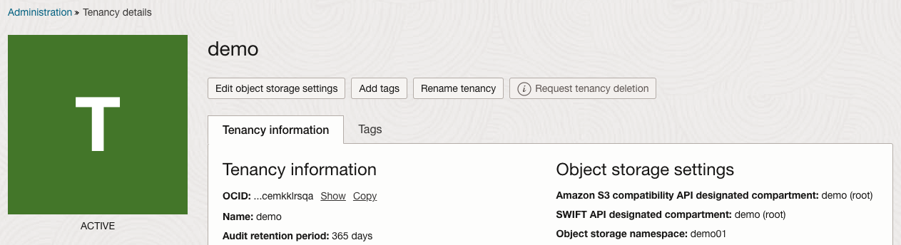

9.1 Velero로 백업, 복구하기
Velero는 쿠버네티스 자원과 영구볼륨을 백업하고 복구하는 도구입니다. 백업본은 Object Storage에 저장합니다. Supported providers 에서 보듯 많은 서비스 제공자에 대해 지원하며, Oracle Cloud의 경우는 S3 호환 Object Storage 제공자로 Velero plugin for AWS을 사용하여, OCI Object Storage로 백업할 수 있습니다.
여기서는 OKE 소스 클러스터를 OCI Object Storage에 백업하고, 타켓 클러스터로 복구해 봅니다.
OCI Object Storage 준비
Customer Secret Key 만들기
Velero 백업본을 저장할 공간이 필요하며, OCI Object Storage는 S3 호환 Object Storage로써 사용할 수 있습니다.
S3 호환 Object Storage로써 접근하기 위해 Secret Key를 생성합니다.
-
OCI 콘솔에 로그인합니다.
-
사용할 IAM 유저 프로필에서 Resources > Customer secret keys 로 이동합니다.
-
secret key를 생성합니다. 생성된 Secret Key를 복사해 둡니다.
-
이후 목록에 보이는 Access key로 복사해 둡니다.
-
생성된 Customer Secret Key로
velero-credentials-for-oci파일을 다음과 같이 생성합니다. 순서대로 복사해둔 Access key, Secret Key 사용$ vi velero-credentials-for-oci [default] aws_access_key_id=bae031188893d1eb83719648790ac850b76c9441 aws_secret_access_key=MmY9heKrWiNVCSZQ2Mf5XTJ6Ys93Bw2d2D6NMSTXZlk=
OCI Object Storage Bucket 만들기
Amazon S3 compatibility API를 사용하는 방식으로 Tenancy 설정에서 지정한 Compartment에 Bucktet을 생성해야 합니다.
-
OCI 콘솔에 로그인합니다.
-
사용할 IAM 유저 프로필에서 Tenancy로 이동합니다.
-
Object storage settings 아래 Amazon S3 compatibility API designated compartment 값을 확인합니다.
(변경 영향도가 없다면, Home Region에서 Edit object storage settings를 클릭하여 Comparment를 변경할 수 있습니다)

-
여기서 Object storage namespace로 확인하여 기록해 둡니다. 예, demo01
-
Amazon S3 compatibility API designated compartment 에 지정한 compartment(예, root)에 Object Storage Bucket를 생성합니다.
- 해당 IAM 유저는 해당 위치의 Object Storage Bucket에 Read/Write 권한이 필요합니다.
- 이름: 예, oci-bucket-velero-20250414
Velero 다운로드
-
OKE 클러스터에 접근 가능한 작업환경에서 Velero CLI와 클러스터에 설치할 파일을 다운로드 받습니다. 여기서는 리눅스 환경기준입니다.
wget https://github.com/vmware-tanzu/velero/releases/download/v1.15.2/velero-v1.15.2-linux-amd64.tar.gz -
압축 해제
tar -xvf velero-v1.15.2-linux-amd64.tar.gz -
$PATH(예, /usr/local/bin)에 등록된 실행가능 위치에 이동시킵니다.
mv velero-v1.15.2-linux-amd64/velero ~/.local/bin/
OKE 소스 클러스터에 Velero 설치하기
백업 또는 복구할 대상 클러스터에 Velero 서버 모듈을 설치해야 합니다.
-
현재 kubectl로 OKE 소스 클러스터에 연결된 상태임을 확인합니다.
$ kubectl config get-clusters -
다음 명령 형식으로 설치합니다. velero-plugin-for-aws은 1.8.2 버전을 설치합니다.
velero install \ --provider [provider name] \ --bucket [bucket name] \ --use-volume-snapshots=false \ --secret-file [secret file location] \ --backup-location-config region=[region],s3ForcePathStyle="true",s3Url=https://{object-storage-namespace}.compat.objectstorage.{region}.oraclecloud.com \ --use-node-agent-
예
NAMESPACE=<OBJECT_STORAGE_NAMESPACE> velero install \ --provider aws \ --bucket oci-bucket-velero-20250414 \ --use-volume-snapshots=false \ --secret-file ./velero-credentials-for-oci \ --plugins velero/velero-plugin-for-aws:v1.8.2 \ --backup-location-config region=ap-chuncheon-1,s3ForcePathStyle="true",s3Url=https://${NAMESPACE}.compat.objectstorage.ap-chuncheon-1.oraclecloud.com \ --use-node-agent
-
-
설치 결과를 확인합니다.
$ kubectl get deployment -n velero NAME READY UP-TO-DATE AVAILABLE AGE velero 1/1 1 1 4m13s $ kubectl logs deployment/velero -n velero ... time="2025-04-11T09:15:17Z" level=info msg="Validating BackupStorageLocation" backup-storage-location=velero/default controller=backup-storage-location logSource="pkg/controller/backup_storage_location_controller.go:142" time="2025-04-11T09:15:17Z" level=info msg="BackupStorageLocations is valid, marking as available" backup-storage-location=velero/default controller=backup-storage-location logSource="pkg/controller/backup_storage_location_controller.go:127" ...
테스트 애플리케이션 배포하기
-
아래와 같이 PV 요청 yaml을 사용하여 요청합니다.
# csi-bvs-pvc.yaml apiVersion: v1 kind: PersistentVolumeClaim metadata: name: csi-bvs-pvc spec: storageClassName: "oci-bv" accessModes: - ReadWriteOnce resources: requests: storage: 50Gi # Block Volume 최소 사이즈 -
테스트 앱 배포
- 요청한 Persistent Volume을 컨테이너 상에 마운트한 테스트 앱
# nginx-deployment-bvs-pvc.yaml apiVersion: apps/v1 kind: Deployment metadata: labels: app: nginx-bvs-pvc name: nginx-bvs-pvc spec: replicas: 1 selector: matchLabels: app: nginx-bvs-pvc template: metadata: labels: app: nginx-bvs-pvc spec: containers: - name: nginx image: nginx:latest volumeMounts: - name: data mountPath: /usr/share/nginx/html volumes: - name: data persistentVolumeClaim: claimName: csi-bvs-pvc -
앱을 배포합니다.
$ kubectl apply -f csi-bvs-pvc.yaml persistentvolumeclaim/csi-bvs-pvc created $ kubectl apply -f nginx-deployment-bvs-pvc.yaml deployment.apps/nginx-bvs-pvc created $ kubectl get pv NAME CAPACITY ACCESS MODES RECLAIM POLICY STATUS CLAIM STORAGECLASS REASON AGE csi-5e3c2028-7f28-41f0-9b1d-3c33f5230f09 50Gi RWO Delete Bound default/csi-bvs-pvc oci-bv 45s $ kubectl get pod NAME READY STATUS RESTARTS AGE nginx-bvs-pvc-55f96c44bd-cw84h 1/1 Running 0 75s -
아래와 같이 컨테이너 내부로 들어가 마운트 된 Persistent Volume내에 파일을 씁니다.
kubectl exec deploy/nginx-bvs-pvc -- bash -c "echo 'Hello PV' >> \ /usr/share/nginx/html/hello_world.txt; cat /usr/share/nginx/html/hello_world.txt;"-
실행 예시
$ kubectl exec deploy/nginx-bvs-pvc -- bash -c "echo 'Hello PV' >> \ > /usr/share/nginx/html/hello_world.txt; cat /usr/share/nginx/html/hello_world.txt;" Hello PV
-
클러스터 백업하기
-
Velero로 백업하고 결과를 확인합니다.
velero backup create oke-source-cluster --include-namespaces default --default-volumes-to-fs-backup velero backup describe oke-source-cluster --details-
실행 예시
$ velero backup create oke-source-cluster --include-namespaces default --default-volumes-to-fs-backup Backup request "oke-source-cluster" submitted successfully. Run `velero backup describe oke-source-cluster` or `velero backup logs oke-source-cluster` for more details. $ velero backup describe oke-source-cluster --details .. Phase: Completed ... Backup Volumes: Velero-Native Snapshots: <none included> CSI Snapshots: <none included> Pod Volume Backups - kopia: Completed: default/nginx-bvs-pvc-55f96c44bd-cw84h: data ...
-
-
백업이 완료되었습니다.
$ velero get backup NAME STATUS ERRORS WARNINGS CREATED EXPIRES STORAGE LOCATION SELECTOR oke-source-cluster Completed 0 0 2025-04-11 10:17:49 +0000 UTC 29d default <none>
OKE 타켓 클러스터에 Velero 설치하기
복구할 대상 클러스터에 Velero 서버 모듈을 설치해야 합니다.
-
현재 kubectl로 OKE 타켓 클러스터에 연결된 상태임을 확인합니다.
$ kubectl config get-clusters -
소스 클러스터와 동일한 과정으로 설치합니다.
클러스터 복구하기
-
복구합니다.
velero restore create --from-backup oke-source-cluster -
복구 진행상태를 확인합니다.
velero restore describe oke-source-cluster-20250411102800 -
확인합니다.
$ kubectl exec deploy/nginx-bvs-pvc -- bash -c "cat /usr/share/nginx/html/hello_world.txt;" Hello PV
참고
- Velero Documentation > Use Oracle Cloud as a Backup Storage Provider for Velero
- Migrate your Azure Kubernetes Service Cluster or Amazon EKS Cluster to Container Engine for Kubernetes using Velero
- velero-plugin-for-aws:v1.9.1 Brakes S3 compatible external storage location - oracle cloud issue #8013
- velero-v1.15.2 & velero-plugin-for-aws:v1.11.1 테스트시 동일 오류 발생
- velero-v1.15.2 & velero-plugin-for-aws:v1.8.2 테스트시 오류 없이 성공
이 글은 개인으로서, 개인의 시간을 할애하여 작성된 글입니다. 글의 내용에 오류가 있을 수 있으며, 글 속의 의견은 개인적인 의견입니다.